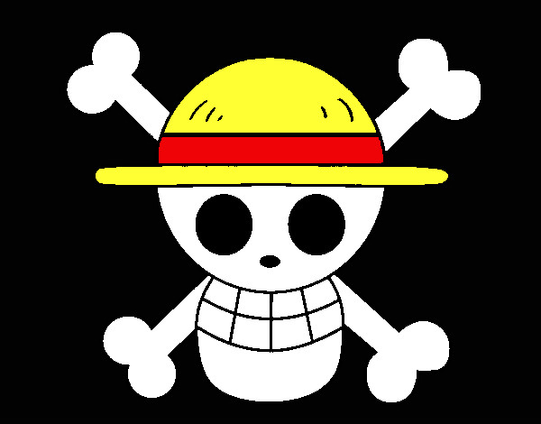
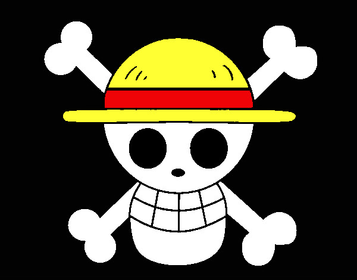

Sombreros de Paja
 

Los sombreros de paja son la tripulación principal en la historia de One Piece. Nuestros
protagonistas cuentan con una pequeña triuplacion de 10 personajes, Luffy, Zoro, Nami, Ussop,
Sanji,
Chopper, Robin, Frankie, Brook y el más reciente Jimbei. La tripulación de un yonkou y que está
ganando un gran ronombre en el nuevo mundo, temidos por la Marina y la gente.
Cuentan con su barco Thousand Sunny creado por su propio carpintero, Frankie. Este tiene miles
de
funcionalidades innovadoras y únicas que hacen de este barco otro peleador más, y por supuesto
que
es otro gran tripulante. Este cuenta con su bandera representativa izada, la calavera con el
sombrero de
paja.